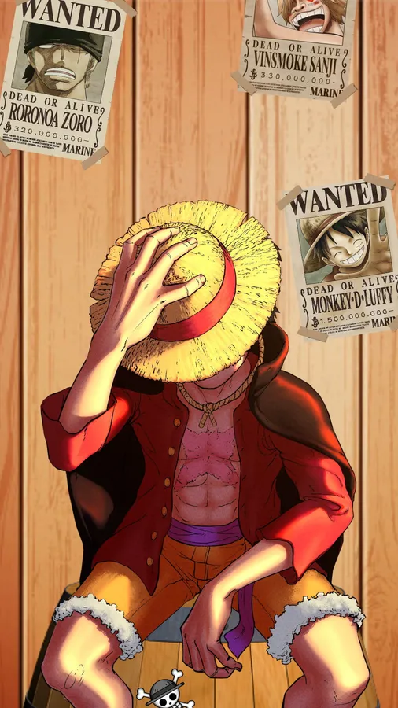

Monkey D. Luffy, also known as "Straw Hat" Luffy, is a fictional character and the protagonist in the Japanese manga series One Piece created by Eiichiro Oda.Born on Dawn Island
Luffy is the son of Revolutionary leader Monkey D. Dragon and grandson of the Marine hero Monkey D. Garp and as such is a carrier of the mysterious "D" legacy.
Most of his childhood was shaped by Garp and Curly Dadan, under whose care he befriended and swore brotherhood to the late Portgas D. "Fire Fist" Ace and Revolutionary officer Sabo.However, he draws his greatest inspiration from the pirate "Red-Haired" Shanks, who (unwittingly) enabled him to eat the Devil Fruit that turned his body into rubber,sacrificed an arm to save his life, and gifted his signature straw hat as a symbol of their vow to reunite someday, after Luffy became a great pirate.